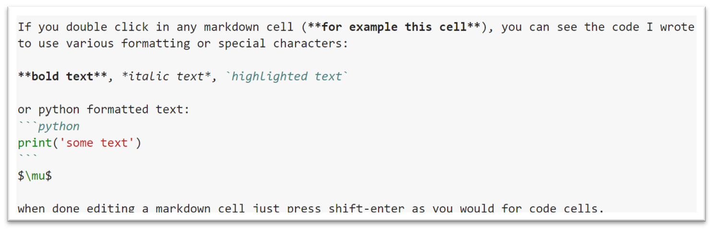

Intro to the Jupyter Notebook
Contents
2. Intro to the Jupyter Notebook#
Prereq: Week 2 Exercises require us to know how to:
comment notebooks using Markdown cells
formatting equations in markdown cells
use
print()statement with an f-string for better presentation of your final answeruse
numpyextension fornp.sqrt()andnp.exp()use
scipy.specialextension forspecial.erf()
2.1. Markdown cells#
{kind=link}
If you type the code shown above in a markdown cell and press Shift-Enter, the code will be replaced with a formatted version shown below.
If you download the jupyter notebook (*.ipynb) version of this lesson and double click in any markdown cell (for example this cell), you can see the code I wrote to use various formatting and special characters:
bold text, italic text, highlighted text
or python formatted text:
print('some text')
\(\mu\)
when done editing a markdown cell just press shift-enter as you would for code cells.
Make a new Markdown cell in a notebook and type:
`$\psi$`
Press shift-enter. What did you get?
2.2. Equation formatting in markdown cells#
Now equations require special formatting. Here are some examples (remember to double click in this cell to see the coding):
subscript: \(x_2\) is given by
$x_2$superscript: \(x^3\) is given by
$x^3$fraction: \(\frac{3 x}{2}\) is given by
$\frac{3 x}{2}$
Equations start and end with a dollar sign. Between the dollar sign is LaTeX code which we will talk about more below.
If we were to try
$10^23$, we would get \(10^23\). We need to use{23}. If{}are missing, it is assumed that only 1 character is being superscripted.proper formatting:
$10^{23}$gives \(10^{23}\)
This notation is only for markdown cells. Do not use it in code cells or you will get errors. For example, we can format avagadro’s number in a “Markdown” cell as:
$6.02\times10^{23}$which gives \(6.02\times10^{23}\) but in a “Code” cell we would write6.02*10**23
The notation used between the dollar signs is LaTeX so you can go online and use a LaTeX editor to create an equation and paste the results here. For example, a quick search gives me http://www.hostmath.com/. Here you can click on equation templates and it gives you the LaTeX code. Just remember to paste it between $$.
$\int_{a}^{b} \frac{\sqrt[4]{a x}}{x} \text{ d}x$ :
\(\int_{a}^{b} \frac{\sqrt[4]{a x}}{x} \text{ d}x\)
use double dollar signs $$ $$ if you want your equation on it’s own line and centered: $\(\int_{a}^{b} \frac{\sqrt[4]{a x}}{x} \text{ d}x\)$
double click to see the code for the following: $\(\begin{cases}a & x = 0\\b & x > 0\end{cases}\)$
\({\sum_a^b} \), \(\overline{ab}\), \(\overrightarrow{ab}\), \(\Huge\alpha\), \(\Delta\), \(\Large\delta\)
2.3. Example Problem: Atoms in BCC#
Let’s calculate the number of atoms in a cubic meter of a bcc material given the atomic radius of 0.15 nm.
The volume of an bcc unit cell is given by \(V_{cell}=\left(\frac{4 R}{\sqrt{3}} \right)^3\). The bcc unit cell contains 2 atoms so we get the number of atoms per cubic meter as: $\(\frac{2}{\left(\frac{4 R}{\sqrt{3}} \right)^3}\)$ if R is given in meters.
import numpy as np
num_atoms_bcc=(2/(4*0.15*10**-9/np.sqrt(3))**3) # notice the double "**" for power
print(num_atoms_bcc)
# or with nicer formatting & limiting answer to 2 decimal places
print(f'The number of atoms in the bcc unit cell is {num_atoms_bcc:.2e} atoms/m^3')
4.811252243246881e+28
The number of atoms in the bcc unit cell is 4.81e+28 atoms/m^3
2.4. Some additional help#
If you need to use functions such as the sqrt, exponential, sin, etc you will need to import numpy as
import numpy as np
We imported this previously so we don’t need to repeat that here.
np.exp(2)
7.38905609893065
np.sqrt(144)
12.0
#180 degrees = pi radians
# so 45 degrees would be Pi/4
np.cos(np.pi/4) #trig functions all expect radians not degrees
0.7071067811865476
Some special functions such as the error function requires the special extension from the scipy library.
from scipy import special
special.erf(0.5)
0.5204998778130465
You will need to write your own function again this week so check the examples from last week and the video lesson but below is the basic format and an example.
def function_name(variable_1, variable_2, etc):
statement_1
statement_2
return variable #or print() statement
def atoms_per_bcc(atomic_radius): #atomic_radius in nm
num_atoms_bcc=(2/(4*atomic_radius*10**-9/np.sqrt(3))**3)
return num_atoms_bcc #return units = atoms/m^3
atoms_per_bcc(0.15)
4.811252243246881e+28
2.5. FAQ#
In the function definition above you used “return” but in other examples we used “print.” What is the difference?
In the above example if we replace return() with print() and tried to use that output in an additional calculation, we would get an error. For example:
def atoms_per_bcc(atomic_radius): #atomic_radius in nm
num_atoms_bcc=(2/(4*atomic_radius*10**-9/np.sqrt(3))**3)
print(num_atoms_bcc)
6*atoms_per_bcc(0.15)
gives a TypeError. We are trying to multiply a print output by a number. return() on the otherhand gives a numerical output that we can assign to variables or use in calculations, etc.
2.6. Exercises#
The problems below may require the ability to:
comment notebooks using Markdown cells
write equations in Markdown cells using
$LaTeX$use
print()statement and f-string for better presentation of your final answeruse
numpyextensionuse
scipy.specialextension
Don’t forget:
Include the original problem statement in your jupyter notebook.
Use Markdown to indicate the equations used. These should be nicely formatted, i.e. superscripts, subscripts, greek letters, etc.
Present your final answer using a
return()statement and include a comment to indicate units.
2.6.1. Problem 1:#
NaCl has a cubic unit cell with an edge length equivalent to \(2 r_{Na^{+}} + 2 r_{Cl^{-}}\). If the ionic radii are 0.102 and 0.181 nm respectively, compute the volume of the unit cell. Remember to use a Markdown cell to write the final equation you are using.
Remember in Python exponents used in calculations are written
**and not as^.
2.6.2. Problem 2:#
If the atomic weights of Na and Cl are 22.99 and 35.45 \(g/mol\) respectively and the unit cell contains \(4 Na^+\) and \(4 Cl^-\) ions, compute the density of NaCl in units of \(g/cm^3\). Use \(6.022 \times 10^{23}\) for Avagadro’s number.
2.6.3. Problem 3:#
Calculate the number of Schottky defects per cubic meter in potassium chloride at 500 \(^{\circ}\)C. The energy required to form each Schottky defect is 2.6 eV and the density for KCl at 500 \(^{\circ}\)C is 1.955 \(g/cm^3\). The atomic weight for K and Cl is 39.10 and 35.45 g/mol respectively.
This problem will require the numpy package. Use the statement:
import numpy as npthen you can usenp.exp().
2.6.4. Problem 4:#
We want to harden the steel surface of a plate by carburization. Our setup is such that the surface concentration of carbon is 1.20 wt%, the initial carbon in our steel sample is 0.2 wt%, at our processing temperature the diffusion coefficient is \(1.6 \times 10^{-11}\) \(m^2 / s\), and our carburizing time is 5 hours. Will the concentration at a depth of 0.5 mm exceed our target value of 0.80 wt%?
This problem will require the scipy.special package. Use the statement:
from scipy import specialthen you can usespecial.erf().
2.6.5. Problem 5:#
Define a function called unitcell_density where given: edgelength, num_atoms_1, num_atoms_2, A1, and A2, the function returns the density in units of \(g/cm^3\). Your function can assume a cubic unit cell. Use your function to repeat problem (2) above. Use comments to indicate what units are expected for the input variables.
2.6.6. Problem 6:#
Does your function in the previous problem work for single element materials? Try using it to find the density of gold given the atomic radius of 0.1442 nm and the atomic weight of 196.96 g/mol. Recall that the edge length for fcc gold is given by \(2 R \sqrt{2}\) and the fcc unit cell contains a total of 4 atoms. Your answer should be given in units of \(g/cm^3\).